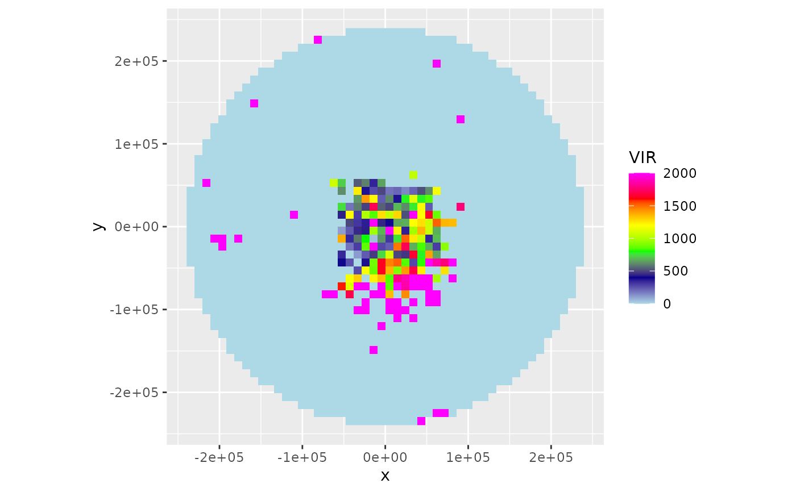

ppi) of vertically integrated density
adjusted for range effectsR/integrate_to_ppi.R
integrate_to_ppi.RdEstimates a spatial image of vertically integrated density (vid) based on
all elevation scans of the radar, while accounting for the changing overlap
between the radar beams as a function of range. The resulting ppi is a
vertical integration over the layer of biological scatterers based on all
available elevation scans, corrected for range effects due to partial beam
overlap with the layer of biological echoes (overshooting) at larger
distances from the radar. The methodology is described in detail in
Kranstauber et al. (2020).
A pvol object.
A vp object
number of raster pixels in the x (longitude) dimension
number of raster pixels in the y (latitude) dimension
x (longitude) range
y (latitude) range
Numeric vector of length two. Altitude range, in m
numeric vector of length 1 or 2 to set the resolution of the raster (see res).
If this argument is used, arguments nx and ny are ignored. Unit is identical to xlim and ylim.
Character. Profile quantity on which to base range
corrections, either eta or dens.
reflectivity Character. Scan parameter on which to base range
corrections. Typically the same parameter from which animal densities are
estimated in vp. Either DBZH, DBZV, DBZ, TH, or TV.
(optional) RasterLayer with a CRS. When specified this raster topology is used for the output, and nx, ny, res arguments are ignored.
Latitude of the radar, in degrees. If missing taken from pvol.
Latitude of the radar, in degrees. If missing taken from pvol.
Numeric. Radar antenna height, in m. Default to antenna height
in vp.
Numeric. Beam opening angle in degrees, typically the angle between the half-power (-3 dB) points of the main lobe.
character or object of class CRS. PROJ.4 type description of a Coordinate Reference System (map projection). When 'NA' (default), an azimuthal equidistant projection with origin at the radar location is used. To use a WSG84 (lat,lon) projection, use crs="+proj=longlat +datum=WGS84"
Character (vector). One or multiple of VIR, VID, R,
overlap, eta_sum or eta_sum_expected.
Numeric. Standard refraction coefficient.
Numeric. Earth equatorial radius, in km.
Numeric. Earth polar radius, in km.
A ppi object.
The function requires:
A polar volume, containing one or multiple scans (pvol).
A vertical profile (of birds) calculated for that same polar volume (vp).
A grid defined on the earth's surface, on which we will calculate the range
corrected image (defined by raster, or a combination of nx, ny,res
arguments).
The pixel locations on the ground are easily translated into a corresponding
azimuth and range of the various scans (see beam_range()).
For each scan within the polar volume, the function calculates:
the vertical radiation profile for each ground surface pixel for that particular scan, using beam_profile.
the reflectivity expected for each ground surface pixel
(\(\eta_{expected}\)), given the vertical profile (of biological
scatterers) and the part of the profile radiated by the beam.
This \(\eta_{expected}\) is simply the average of (linear) eta in the
profile, weighted by the vertical radiation profile.
the observed eta at each pixel \(\eta_{observed}\), which is converted
form DBZH using function dbz_to_eta, with DBZH the reflectivity
factor measured at the pixel's distance from the radar.
The vertical radiation profile for each ground surface pixel for that
particular scan, using beam_profile().
The reflectivity expected for each ground surface pixel
(\(\eta_{expected}\)), given the vertical profile (of biological
scatterers) and the part of the profile radiated by the beam. This
\(\eta_{expected}\) is simply the average of (linear) eta in the profile,
weighted by the vertical radiation profile.
The observed eta at each pixel \(\eta_{observed}\),
which is converted form DBZH using dbz_to_eta(), with DBZH the
reflectivity factor measured at the pixel's distance from the radar.
If one of lat or lon is missing, the extent of the ppi is taken equal
to the extent of the data in the first scan of the polar volume.
To arrive at the final PPI image, the function calculates
the vertically integrated density (vid) and vertically integrated
reflectivity (vir) for the profile, using the function
integrate_profile.
the spatial range-corrected PPI for VID, defined as the adjustment
factor image (R), multiplied by the vid calculated for the profile
the spatial range-corrected PPI for VIR, defined as the adjustment
factor R, multiplied by the vir calculated for the profile.
Scans at 90 degree beam elevation (e.g. birdbath scans) are ignored.
#' @seealso
Kranstauber B, Bouten W, Leijnse H, Wijers B, Verlinden L, Shamoun-Baranes J, Dokter AM (2020) High-Resolution Spatial Distribution of Bird Movements Estimated from a Weather Radar Network. Remote Sensing 12 (4), 635. doi:10.3390/rs12040635
Buler JJ & Diehl RH (2009) Quantifying bird density during migratory stopover using weather surveillance radar. IEEE Transactions on Geoscience and Remote Sensing 47: 2741-2751. doi:10.1109/TGRS.2009.2014463
Kranstauber B, Bouten W, Leijnse H, Wijers B, Verlinden L, Shamoun-Baranes J, Dokter AM (2020) High-Resolution Spatial Distribution of Bird Movements Estimated from a Weather Radar Network. Remote Sensing 12 (4), 635. doi:10.3390/rs12040635
Buler JJ & Diehl RH (2009) Quantifying bird density during migratory stopover using weather surveillance radar. IEEE Transactions on Geoscience and Remote Sensing 47: 2741-2751. doi:10.1109/TGRS.2009.2014463
# Locate and read the polar volume example file
pvolfile <- system.file("extdata", "volume.h5", package = "bioRad")
# load polar volume
pvol <- read_pvolfile(pvolfile)
# Read the corresponding vertical profile example
data(example_vp)
# Calculate the range-corrected ppi on a 50x50 pixel raster
ppi <- integrate_to_ppi(pvol, example_vp, nx = 50, ny = 50)
# Plot the vertically integrated reflectivity (VIR) using a
# 0-2000 cm^2/km^2 color scale
plot(ppi, zlim = c(0, 2000))

if (FALSE) {
# Calculate the range-corrected ppi on finer 2000m x 2000m pixel raster
ppi <- integrate_to_ppi(pvol, example_vp, res = 2000)
# Plot the vertically integrated density (VID) using a
# 0-200 birds/km^2 color scale
plot(ppi, param = "VID", zlim = c(0, 200))
# Download a basemap and map the ppi
bm <- download_basemap(ppi)
map(ppi, bm)
# The ppi can also be projected on a user-defined raster, as follows:
# First define the raster
template_raster <- raster::raster(
raster::extent(12, 13, 56, 57),
crs = sp::CRS("+proj=longlat")
)
# Project the ppi on the defined raster
ppi <- integrate_to_ppi(pvol, example_vp, raster = template_raster)
# Extract the raster data from the ppi object
raster::brick(ppi$data)
# Calculate the range-corrected ppi on an even finer 500m x 500m pixel raster,
# cropping the area up to 50000 meter from the radar
ppi <- integrate_to_ppi(
pvol, example_vp, res = 500,
xlim = c(-50000, 50000), ylim = c(-50000, 50000)
)
plot(ppi, param = "VID", zlim = c(0, 200))
}